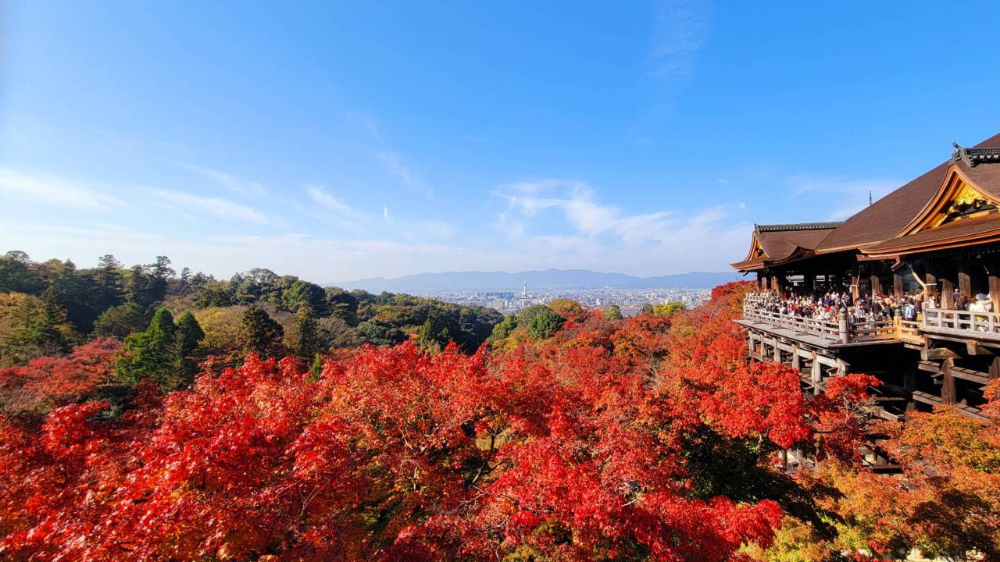

東福寺の紅葉
臨済宗東福寺派大本山の寺院である「東福寺」は、京都の紅葉巡りで外せない人気スポットのひとつです。広大な境内には約2,000本のモミジが植えられており、見頃を迎える11月中旬～下旬には境内全体が真っ赤に色づきます。
清水寺の紅葉

世界遺産「古都京都の文化財」のひとつとして、季節を問わず多くの参拝者で賑わう清水寺。桜の名所としても人気を集めていますが、秋には真っ赤に染まった壮大な景色を楽しめる紅葉スポットとしても知られています。